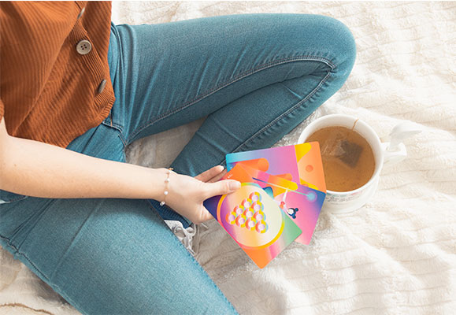
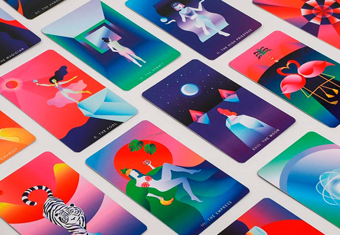
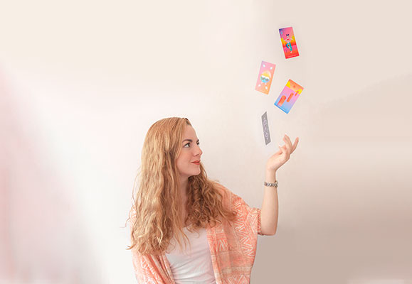

CONSULTA A NUESTROS EXPERTOS
CREANDO UN VÍNCULO CON TU BARAJA DE TAROT


Una de las partes más importantes acerca de leer el tarot es la conexión o vínculo que tu como lector tienes con la baraja. Creo que hablo por casi todos los lectores de tarot cuando digo que cada baraja tiene una forma diferente de mandarnos los mensajes que llevan las cartas, incluso si el significado de la carta es el mismo.
Pero, ¿alguna vez les ha pasado que leen con una baraja de tarot nueva por primera vez y los mensajes o la lectura es mucho más tardada o simplemente nuestra intuición al leerla no es algo que podamos aterrizar con facilidad?
Una solución para ese tipo de cuestiones es crear un vínculo espiritual con tu baraja de tarot. Esto es tanto para lectores principiantes como avanzados. Y es que muchas veces nos cuentan que, según las tradiciones, la primer bajara de tarot que adquieras tiene que ser un regalo de alguien más, y yo soy fiel creyente de que no es para nada necesario, ya que al adquirir una bajara, lo primero es que te llame, que haya algo en ella, en las imágenes, en los colores, etc. que te haga sentirte atraído hacia ella, y claramente eso no se puede dar con una que nos fue regalada. Así que eso será el primer paso para crear un vínculo con tu baraja de tarot: adquirir la que más te llame.
Una vez realizado ese paso, ahora con nuestra nueva baraja en mano, les dejo por aquí unos tips que a mi en lo personal me han servido a crear o fortalecer ese vínculo con mi baraja de tarot:
Observa con detenimiento cada carta
Esto puede sonar demasiado obvio, pero no me refiero a que veas cada una y solo las vayas pasando, sino que con detenimiento observes lo que transmite cada carta individualmente, no tanto leyendo, sino solo observando y preguntándonos lo siguiente:
¿qué colores son los que más usa la baraja?
¿qué nos transmiten los colores?
¿qué formas son las más recurrentes?
¿qué estilo tiene a comparación de otras barajas? (si es de un tema en particular, si sus imágenes son más conceptuales, si es totalmente literal), etc.
Por ejemplo vemos esta con un tema de gatitos | CAT TAROT
Aquí vemos la paleta de color muy marcada en la baraja de Mystic Mondays (mi favorita) | MYSTIC MONDAYS TAROT
¿Qué sentimientos te trasmiten las cartas?
Ahora bien, esta será una especie de lectura express de las cartas, pero no leerlas a nadie, solo analizar su significado. Para esto vamos a tomar una de las cartas y sin leer o analizar lo que ya sabemos que significa vamos a preguntarnos cuáles sentimientos nos transmite. Imaginemos qué historia es la que está pasando en la carta, imaginemos que somos parte de lo que sucede en la carta, etc. Eso incluso puede ayudar cuando nos atoramos en el significado de alguna de las cartas durante una lectura.
Duerme con tu baraja
Este es uno de los consejos que en lo personal me ha ayudado más a ver a la baraja, no solo como un conjunto de cartas que cada una significa algo en particular, sino como un ayudante en trasmitir los mensajes o casi como si fuera otra persona que quieres y admiras.
Este tip es muy sencillo ya que solo necesitas que, cuando te vayas a dormir, la coloques a lado de tu almohada o lo más cerca de ti sin que haya posibilidad de que la puedas dañar mientras duermes, usualmente lo más sencillo es colocarla a un lado de tu almohada.
Esto lo recomiendo hacer en la primera noche que pasarás con tu baraja después de adquirirla, pero yo en lo personal duermo con ella diario, solo no sobre mi almohada sino en mi buró de noche.
Y bueno, esos son algunos de mis tips que me han facilitado el crear un vínculo con mi baraja al inicio, o sea cuando apenas se adquiere. Es importante también que la carguen de energía y la limpien constantemente pero eso será para otro artículo.
¡Espero que les haya servido está información y cualquier duda me pueden enviar mensaje a cualquiera de mis redes sociales y yo estaré feliz de contestarles!